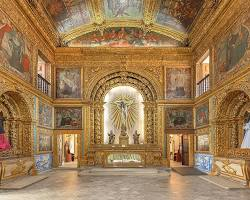

Forte das Cinco Pontas
Um dos monumentos históricos mais importantes do Brasil, abriga o Museu da Cidade do Recife.
Paço do Frevo
Um espaço dedicado à dança do frevo, patrimônio imaterial da humanidade. Oferece shows, exposições e oficinas.

Capela Dourada
Uma verdadeira joia da arquitetura barroca, com rica decoração em ouro.
